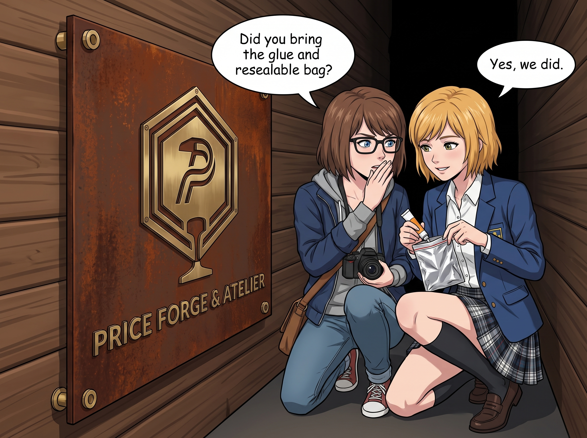
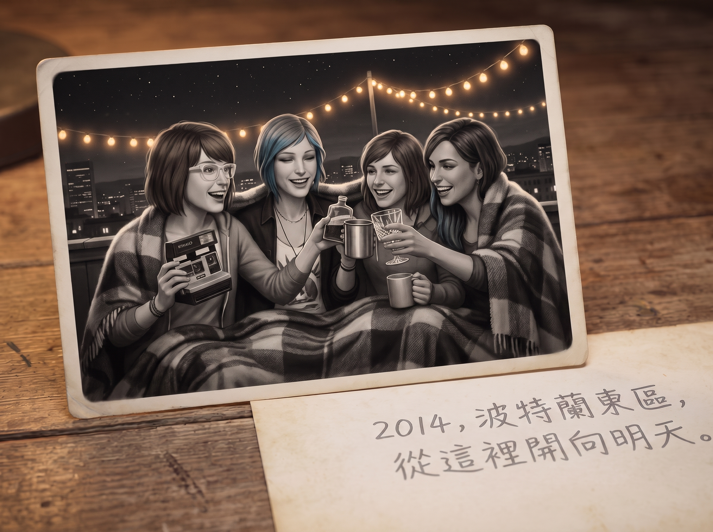
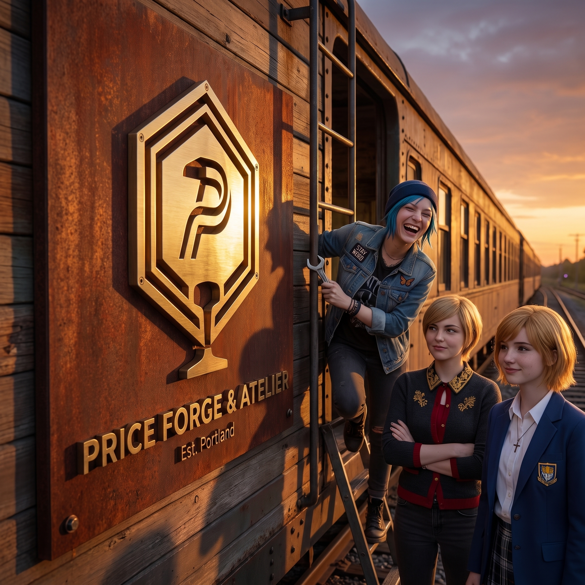

時間錨點



週四下午，波特蘭東區的舊車廂外，微風吹拂著鐵軌旁的野燕麥。
厚重的耐候鋼黃銅招牌正平放在兩張結實的木工馬凳上，等待著最後的起吊與牆面打孔固定。Chloe 正蹲在車廂側壁前，戴著護目鏡，手裡握著衝擊鑽「咚咚咚」地在鋼骨架上預埋重型膨脹螺栓；而 Victoria 則戴著遮陽帽站在幾米外，嚴格拿著水平儀校準著四個打孔點的水平基準線。
「Price，左邊那個孔偏高了 1.5 毫米，重新對準中心衝點！」Victoria 的聲音穿透電鑽聲傳來。
趁著兩人全神貫注於牆面施工的空檔，Max 和 Kate 悄悄溜到了招牌背面。
這塊厚達 5 毫米的耐候鋼底板背後，因為加裝了 15 毫米的懸空黃銅襯套，在鋼板與車廂木質外壁之間剛好形成了一處隱蔽、乾燥且完全不受風雨侵蝕的狹窄夾層。
「膠水和密封袋帶了嗎？」Max 壓低聲音，像個正在執行秘密暗房任務的特工，推了推鼻樑上的黑框眼鏡。
「帶啦。」Kate 抿著嘴輕輕一笑，從小巧的布袋裡掏出了一隻特製的加厚防潮鋁箔密封袋，以及一管工業級無酸耐候膠。
密封袋裡的物品雖然精巧，卻承載著這間工坊最初的所有記憶：
暗房銀鹽微縮合影——那是一張 Max 昨晚在暗房裡特意用無酸相紙沖洗的 3x5 吋黑白照片。畫面上是天台慶功宴那晚，四個人裹著同一條羊毛毯、在星空與串燈下碰杯大笑的瞬間，背面用鉛筆工整地寫著：「2014·波特蘭東區，從這裡開向明天。」
天台草本植物封存樣本——Kate 親手採摘並完全脫水的一小枝迷迭香、一片綠薄荷葉，以及一朵壓得極其平整的藍紫色薰衣草。植物被夾在透明的植物羊皮紙中，封口處還殘留著淡淡的冷萃精油清香。
一枚老雪佛蘭金屬墊片——Chloe 在第一次修復皮卡化油器時換下來的舊黃銅墊片，表面被 Max 用細銼刀刻上了四個人的名字縮寫：「M · C · K · V」。
一條深藍色絲緞帶角料——來自 Victoria 送給 Chloe 那套瑞士黑檀木刻刀禮盒上的絲帶，象徵著這場合夥關係最不可或缺的起點。
「等這面招牌掛上去，大概要過幾十年、甚至工坊傳給下一代人的時候，才有人會拆下來看見它吧？」Max 輕聲說著，小心翼翼地把所有物件滑入鋁箔袋，用壓條徹底排空空氣並封死。
「這就是我們留給未來的『時間錨點』，」Kate 眉眼彎彎，用指尖抹開耐候膠，將密封袋平整而牢固地貼在了招牌背面正中央、那個抽象「P」字正後方的鋼板凹陷處，「無論以後這節火車開向哪裡，這個起點永遠都在。」
Kate 還細心地在袋子外層貼上了一枚小小的四葉草防水貼紙。
「喂！後勤組的兩位！」Chloe 的大嗓門突然從車廂上方傳來。她已經利落地爬上了人字梯，手裡晃著活動扳手，探出藍色腦袋往下看，「在招牌後面嘀咕什麼呢？快把螺絲墊片遞上來，準備起吊了！」
「來了！」Max 和 Kate 迅速對視了一眼，默契地相視一笑，將空工具包藏回身後。
十分鐘後，四人合力將這塊沉甸甸的耐候鋼黃銅招牌抬起，精準對準了預埋螺栓。隨著扳手「咔噠、咔噠」的擰緊聲，沉重的金屬招牌穩穩咬合在了車廂外壁上，將那個小小的鋁箔秘密袋永久地封存在了冰冷堅固的鋼鐵與溫暖的木壁之間。
夕陽西下，金色的餘暉灑在橫向拉絲的黃銅字體上，「PRICE FORGE & ATELIER」閃爍著耀眼奪目的冷金光澤。
Max 站在鐵軌旁，端起相機，將那塊在暮色中傲然挺立的招牌，以及站在梯子旁叉腰大笑的 Chloe、抱胸滿意的 Victoria 和溫柔微笑的 Kate，一同框進了永恆的取景器中。